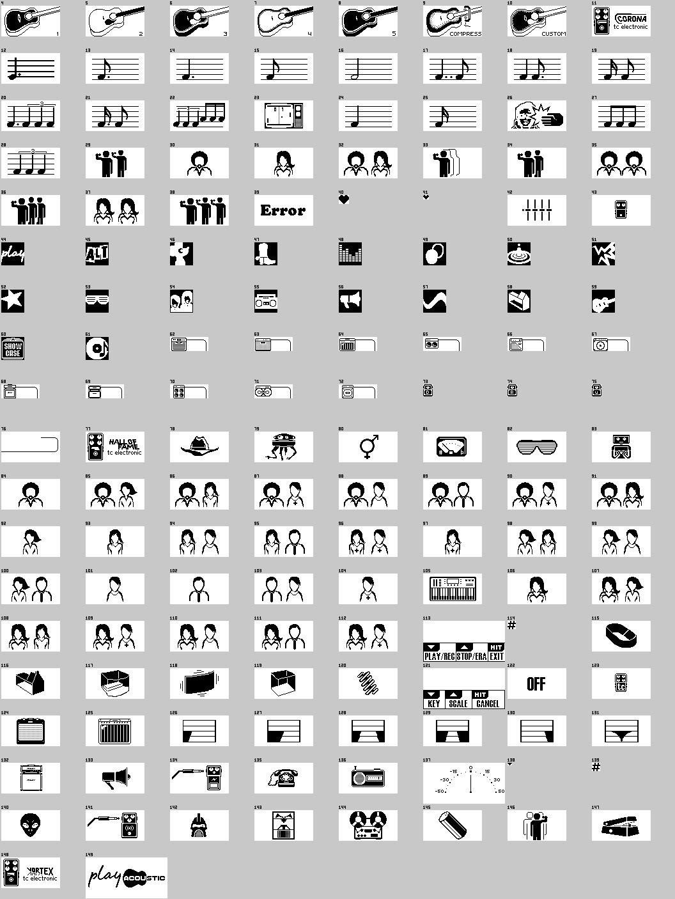
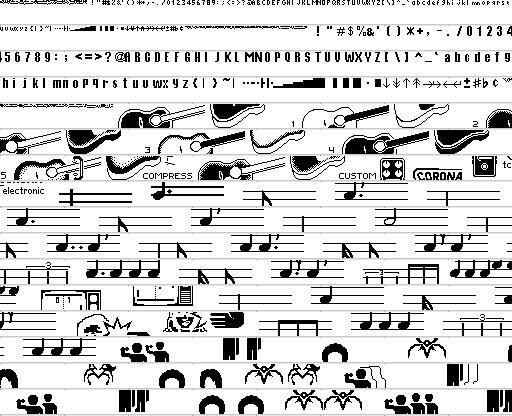

The update file
Firmware ships as a MIDI SysEx file (.syx), about 1.1 MB, which an editor sends to the unit over USB-MIDI. Every message carries the TC-Helicon manufacturer ID and a fixed header:
F0 00 01 38 00 60 <type> … F7 type 0x51 enter / leave update mode type 0x52 <sub> <packed payload> sub 00 = data, 02 = section separator, 01 = end
MIDI data bytes can't have the top bit set, so 8-bit data is packed 7 bytes at a time behind a flag byte. Two details matter, and getting either wrong produces plausible-looking garbage:
- The first payload byte is the subcommand. Packing starts after it.
- The flag byte is MSB-first: flag bit
6 − kis bit 7 of data bytek.
The correct decode is easy to check. Pairs like ff 7f and 80 80, which betray a misplaced top bit, disappear. Preset names such as ROCKABILLY SLAP read cleanly, and entropy drops from 5.88 to 5.51 bits per byte. Each file decodes into two sections: a 981-byte loader (sec0) and a 914–980 KB main image (sec1).
There is no encryption and no signature. The only integrity check is a 7-bit sum per block, which the sending editor computes from the file during transfer.
Two processors
Freescale DSP56300 family
Runs everything you interact with: audio effects, menus, display, MIDI and SysEx handling, presets. Identified by its 24-bit opcodes (0AF080 jump, 0BF080 call, 00000C return), then confirmed with a full disassembler. Strings such as InterCoreWrite and a block-transfer handshake point to a dual-core part.
Atmel AVR co-processor
Handles USB and boots the DSP through its host port. The DSP only asks for its version (AVR Version: %d.%d). The AVR's own firmware is never part of an update file, so it is factory-programmed.
The DSP source tree leaks through assertion strings, for example C:\Projects\PlayAcoustic\DSP\Appl\Srcs\Midi/MIDIhand.c and MIDIEXCL.C. Text is stored one character per 24-bit word (00 00 'A'), which is why a plain string search finds almost nothing. Searching per word turns up about 1,360 strings: menus, fonts, printf formats and DSP module names.
Image layout
The loader reads the main image as a chain of records, each [count][address][type] followed by count words. Type 0 writes program memory below 0x10000 and data memory above it. Type 4 means "start here". Version 1.4.00 has twelve records and starts at P:00CB.
| Record | Load address | Words | Contents |
|---|---|---|---|
| 0 | P:000000 | 30,449 | Internal program: vectors, audio interrupts, DSP kernels, flash loader |
| 1 | X:031600 | 14,277 | Internal data |
| 2 | X:400000 | 8,565 | External code |
| 3 | X:40C000 | 130,742 | Main application, C runtime, second-core transfer |
| 4–8 | X:42BEB9… | small | Data |
| 9 | X:42C560 | 55,959 | Initialised data and strings, copied to their run addresses at start-up |
| 10 | X:43A000 | 257 | Data |
| 11 | X:43A180 | 80,980 | Fonts and bitmaps, then UI, MIDI and SysEx code |
External RAM is shared between program and data space, so code loaded as data at 0x40xxxx runs from there. Initialised data is relocated at start-up. Strings in record 9, for instance, are used at their load address plus 0x2A8CC. That offset was found statistically: it is the one offset that makes 197 code constants land exactly on string starts.
Boot and update
Normal power-up
- 01DSP boot ROMThe DSP's mask ROM reads the first record from a byte-wide NOR flash at
X:C00000. - 02Flash loaderA small routine at
P:007Dcopies the remaining records into RAM. It checks no checksum. - 03ApplicationThe jump at
P:01ADenters the application atP:01AF, which brings up audio and runsmain.
Firmware update
- 01Enter update modeThe editor sends one raw
…60 51message. From then on the device answers as device ID0x60. - 02Block transferEach block is sent as a header with a 7-bit sum, the block, then a ready check. The device replies
7F 01(accepted) or7F 00(retry). - 03Host bootThe DSP is booted over its host port: first the 325-word loader from
sec0, then the image records into RAM. - 04Flash writerCode inside the new image (
P:4161DB) checks the flash chip ID (01/F6) and erases each 64 KB sector as it reaches it. It programs every byte with the standard AMD command sequence and confirms it by data polling. It also patches the start jump so the flashed copy boots the application. - 05Report and rebootThe DSP reports "start" and "done" to the host, halts, and the unit reboots.
Starting the image at its normal entry point in an emulator therefore runs the flash writer, not the application. Emulating a normal power-up means applying the same one-word patch the writer makes.
Disassembly and emulation
Neither Rizin nor Ghidra supports the DSP56300 out of the box. The open-source dsp56300 core from the gearmulator project (GPLv3), built for emulating Access Virus synths, includes both a disassembler and an emulator. Both were built locally and used read-only against the firmware.
The disassembly covers all twelve records and the loader. Many tables (parameter descriptors, menus, value names) are only built when the unit runs, so the image was booted in the emulator. Four adjustments got it through start-up:
- apply the flash writer's one-word patch, so the normal application runs;
- report the external "ready" bit (
Y:FFFFE5bit 23) as set; - answer the second-core block-transfer handshake (
0x5A0per block,0xA5A5Aat the end) without emulating the second core; - switch off the audio-port clock, whose interrupts would otherwise starve the main code.
With the interpreter, 60 million instructions take under 100 seconds. RAM was then dumped for analysis.
Live control over SysEx
The USB co-processor forwards SysEx to the DSP but drops incoming channel messages, so MIDI CC and Program Change never arrive (see the CC experiment). The DSP already has a compact pair of SysEx commands that reach any parameter through the same central setter the Control knob uses:
set F0 00 01 38 <ch> 70 22 p1 p0 v3 v2 v1 v0 F7 14 bytes; param = p1<<7 | p0, value = 28-bit get F0 00 01 38 <ch> 70 47 p1 p0 F7 reply: a 22 message with the value
<ch>comes from the universal identity reply;7Falso works as a wildcard.70is the Play Acoustic,71the Play Electric.- A change shows on the pedal's screen at once, like a knob turn, with no "SysEx received" pop-up.
- Confirmed on a stock 1.4.00 unit for HIT, LOOP LEVEL and the Mix guitar level, in both directions.
45 00 00asks for the current preset; the reply header carries its 15-character name. The preset number is parameter0x2A4.
The firmware has 18 SysEx commands in all (setup and preset transfer, sync, a front-panel tunnel and a few unknown ones). The full reference, with byte counts and timing, is docs/SYSEX.md.
Two settings lock out USB control. MIDI CTRL 0x278 = MIDI (5-pin only, which this unit doesn't have) or FILTER 0x27B = SYSEX make the pedal ignore SysEx after the next power-up. See Lock-out and factory reset.
Parameters
Every parameter has a 16-word descriptor: minimum, maximum, default, a pointer to the on-screen name, a "settable over SysEx" flag, a value-format code and an instance-label list. The lookup is X:7E91F3 + 16 × (X:7E85F1[id] & 0xFFFF). There are 948 IDs (0x000–0x3B3); 869 are settable over SysEx. Many IDs share one descriptor and differ by instance, so the display adds an instance label: descriptor LEVEL becomes GUITAR LEVEL, HEADPHONE LEVEL and so on.
| ID | Name | Range / values |
|---|---|---|
| 0x0BB | GUITAR LEVEL (Mix) | −36 … 0 dB |
| 0x06B | HARMONY STYLE | HIGH, HIGHER, LOW, … (28 styles) |
| 0x158 | TEMPO | 45 … 300 BPM |
| 0x272 | INPUT | DYNAMIC MIC, CONDENSER MIC, MP-75 MIC, … |
| 0x2A8 | HIT | OFF / ON |
| 0x2CE | HARMONY CONTROL | OFF / ON / HIT |
| 0x312 | HEADPHONE LIM | −61 … 0 dB |
Value names (DYNAMIC MIC, LOOPING, 1 BTN LOOPER …) come from a pointer table at X:457795 indexed by the format code. The full list is data/params-1.4.00.csv.
Display graphics
All fonts and pictures are inside the update file, at the start of record 11. Fonts carry a 32-character name (Font_ArialBlack7, Font_Haettenschweiler13/15/17, Font_Impact19, Font_VoicePrism5/10, Font_Notes28x17), the character range, the height, a width table and a pointer to the glyph data.
Pictures are listed in an image table of 150 entries (width, height, pointer), which start-up copies to X:3111; code refers to picture i as X:3111 + 3i. Pixels are 1 bit each, stored in 24-row bands, one 24-bit word per column per band, least significant bit at the top. A second table holds 13 picture lists, one per effect page, with one picture per style value.


Version history
Comparing builds word by word, once the records are aligned, shows mostly relinking. Consecutive builds share 97–99% of the internal program, and most differences are single shifted jump targets.
| Step | Program words kept | External image kept | Release notes |
|---|---|---|---|
| 1.0.04 → 1.1.00 | 98.3% | 66.9% | MP-76 support |
| 1.1.00 → 1.2.00 | 98.9% | 49.0% | Guitar delay, per-preset guitar FX (largest change) |
| 1.2.00 → 1.3.00 | 97.3% | 68.4% | Longer looper |
| 1.3.00 → 1.4.00 | 98.9% | 68.5% | Switch-3/6 send CC 102–107 |
TC-Helicon's own server hosts PA 1.2.00, PA 1.3.00 and PE 1.2.00. Those copies are byte-identical to the community mirror. Version 1.4.00 and PE 1.3.00 appear only on the mirror. They look like genuine builds: same loader, about 99% shared code, nine new strings matching the release note. They were compiled from a different path (C:\Projects\… instead of D:\Project\…), and nothing in the file can prove where they came from.
The CC experiment
The DSP has a generic CC engine: a static table pairs parameters with CC numbers (stock: CC 28 HIT, 30 KEY, 31 SCALE, 114 BYPASS), and an incoming CC sets its parameter through the central setter. A test build, CCtest1, remapped three CCs and changed the info-screen label to CC-MOD1 VERSION:. It changed 18 bytes in three SysEx messages, booted in the emulator, and flashed fine on the unit; the new label showed.
Incoming CCs still did nothing, on the patched build and on stock alike: the USB co-processor drops channel messages before the DSP sees them. The approach was abandoned in favour of the SysEx commands above. Its files and notes are in legacy/cc-approach/.
Lock-out and factory reset
After a power cycle, the test unit stopped answering any SysEx over USB, while still sending its own MIDI. No editor could control it. The likely cause was a MIDI setting written earlier by a test tool: MIDI CTRL set to MIDI, which listens only to a 5-pin socket the Play Acoustic doesn't have. Such settings take effect at the next start-up.
The fix was a factory reset. At power-on the firmware reads the held front-panel buttons; STORE + BACK erases the stored settings and user presets and restores factory defaults, and USB control worked again. The remote now refuses to change MIDI CTRL and FILTER.
A factory reset also erases your own presets and favorites. There is no way to back them up while USB control is locked out.
Flash safety and recovery
Nothing checks image integrity: the unit flashes and boots any well-formed image. A patched build (CCtest1) and then stock 1.4.00 were both flashed with TC VoiceSupport without trouble.
Any update can still be interrupted. Unplugging USB or losing power mid-write leaves the flash half-erased.
Why recovery should work
Update mode depends on three things: the AVR's firmware, which no update touches; the DSP's built-in boot ROM; and the loader inside the update file. None of them lives in the flash being rewritten, so sending a stock file again should restore a broken unit.
The unproven part: this assumes the AVR enters update mode on its own, without help from the DSP application.
The evidence supports it. Only the host can boot the DSP over its host port. The DSP application has no handler for the update message, and its SysEx filter accepts only its own product ID. The update mode answers under a separate device ID shared across products. Nobody has yet recovered a unit from a dead DSP image.
Holding STORE and BACK at power-on is a factory reset of presets and settings, run by the DSP application (see above). It does not restore firmware. The last resort is hardware: reprogramming the NOR flash directly, or loading code through the DSP's debug port.
Before flashing
- Back up presets and setup.
- Keep stock 1.4.00 and official 1.3.00 at hand, verified against their checksums.
- Use a direct USB port, mains power, and no sleep. Leave the unit alone during the update.
Open questions
- Whether the AVR enters update mode when the DSP image is broken (the key recovery assumption).
- How the pedal opens its "advanced" effect pages.
- A SysEx route to preset up/down, STORE, FAVORITE and GENRE (the front-panel tunnel didn't work).
- The remaining value formats: frequency tables, note names, decay and speed scales.
- The exact DSP part number and the AVR model, which a board photo would settle.
Files and tools
| Path | Contents |
|---|---|
| tools/pa-remote.html | Play Acoustic Remote: virtual front panel and live control (with pa-menus.js, pa-images.js) |
| tools/verify.html | Checklist of what has been tested on the unit |
| tools/ | Unpacker, record walker, parameter and menu dumpers, image extractor, emulator harness |
| stock/ | Original update files with checksums, community mirror and official server |
| data/ | Decoded sections, 1.4.00 load records, all 948 parameters (CSV), menu tables (JSON), strings |
| disasm/1.4.00/ | Full DSP56300 disassembly with string address map |
| emulation/1.4.00/ | RAM dumps and run log |
| graphics/ | All 146 pictures as PNG, contact sheet, raw font renders |
| docs/ | This page, ANALYSIS.md (detailed notes), SYSEX.md, MENUS.md |
| legacy/ | The CC experiment, and the first-pass analysis with the wrong decode |
Credits: the dsp56300 disassembler and emulator are from the gearmulator project (GPLv3). Update-protocol details were checked against the community Play Acoustic editor at oddeyez.se. The Play Acoustic, its firmware and its artwork belong to their owners.